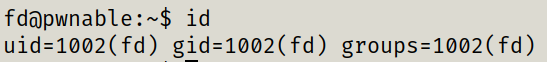

gives the id of the current session - user, groupand other
The root user and group are usually given uid and gid 0.
other number vary between systems, some systems reserve 100-999 for dynamic system allocation and start standard user accounts from 1,000 and up.

